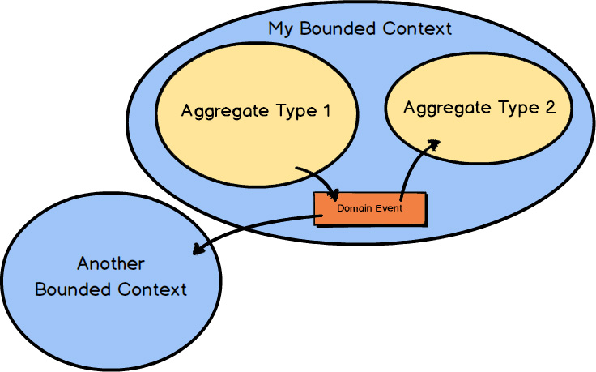

You want to improve your craft and to increase your success on projects. You are eager to help your business compete at new heights using the software you create. You want to implement software that not only correctly models your business’s needs but also performs at scale using the most advanced software architectures. Learning Domain-Driven Design (DDD), and learning it quickly, can help you achieve all of this and more.
DDD is a set of tools that assist you in designing and implementing software that delivers high value, both strategically and tactically. Your organization can’t be the best at everything, so it had better choose carefully at what it must excel. The DDD strategic development tools help you and your team make the competitively best software design choices and integration decisions for your business. Your organization will benefit most from software models that explicitly reflect its core competencies. The DDD tactical development tools can help you and your team design useful software that accurately models the business’s unique operations. Your organization should benefit from the broad options to deploy its solutions in a variety of infrastructures, whether in house or in the cloud. With DDD, you and your team can be the ones to bring about the most effective software designs and implementations needed to succeed in today’s competitive business landscape.
In this book I have distilled DDD for you, with condensed treatment of both the strategic and tactical modeling tools. I understand the unique demands of software development and the challenges you face as you work to improve your craft in a fast-paced industry. You can’t always take months to read up on a subject like DDD, and yet you still want to put DDD to work as soon as possible.
I am the author of the best-selling book Implementing Domain-Driven Design [IDDD] , and I have also created and teach the three-day IDDD Workshop. And now I have also written this book to bring you DDD in an aggressively condensed form. It’s all part of my commitment to bringing DDD to every software development team, where it deserves to be. My goal, of course, includes bringing DDD to you.
You may have heard that DDD is a complicated approach to software development. Complicated? It certainly is not complicated of necessity. Indeed, it is a set of advanced techniques to be used on complex software projects. Due to its power and how much you have to learn, without expert instruction it can be daunting to put DDD into practice on your own. You have probably also found that some of the other DDD books are many hundreds of pages long and far from easy to consume and apply. It required a lot of words for me to explain DDD in great detail in order to provide an exhaustive implementation reference on more than a dozen DDD topics and tools. That effort resulted in Implementing Domain-Driven Design [IDDD] . This new condensed book is provided to familiarize you with the most important parts of DDD as quickly and simply as possible. Why? Because some are overwhelmed by the larger texts and need a distilled guide to help them take the initial steps to adoption. I have found that those who use DDD revisit the literature about it several times. In fact, you might even conclude that you will never learn enough, and so you will use this book as a quick reference, and refer to others for more detail, a number of times as your craft is refined. Others have had trouble selling DDD to their colleagues and the all-important management team. This book will help you do that, not only by explaining DDD in a condensed format, but also by showing that tools are available to accelerate and manage its use.
Of course, it is not possible to teach you everything about DDD in this book, because I have purposely distilled the DDD techniques for you. For much more in-depth coverage, see my book Implementing Domain-Driven Design [IDDD] , and look into taking my three-day IDDD Workshop. The three-day intensive course, which I have delivered around the globe to a broad audience of hundreds of developers, helps get you up to speed with DDD rapidly. I also provide DDD training online at http://ForComprehension.com .
The good news is, DDD doesn’t have to hurt. Since you probably already deal with complexity on your projects, you can learn to use DDD to reduce the pain of winning over complexity.
Often people talk about good design and bad design. What kind of design do you do? Many software development teams don’t give design even a passing thought. Instead, they perform what I call “the task-board shuffle.” This is where the team has a list of development tasks, such as with a Scrum product backlog, and they move a sticky note from the “To Do” column of their board to the “In Progress” column. Coming up with the backlog item and performing “the task-board shuffle” constitutes the entirety of thoughtful insights, and the rest is left to coding heroics as programmers blast out the source. It rarely turns out as well as it could, and the cost to the business is usually the highest price paid for such nonexistent designs.
This often happens due to the pressure to deliver software releases on a relentless schedule, where management uses Scrum to primarily control timelines rather than allow for one of Scrum’s most important tenets: knowledge acquisition.
When I consult or teach at individual businesses, I generally find the same situations. Software projects are in peril, and entire teams are hired to keep systems up and running, patching code and data daily. The following are some of the insidious problems that I find, and interestingly ones that DDD can readily help teams avoid. I start with the higher-level business problems and move to the more technical ones:
• Software development is considered a cost center rather than a profit center. Generally this is because the business views computers and software as necessary nuisances rather than sources of strategic advantage. (Unfortunately there may not be a cure for this if the business culture is firmly fixed.)
• Developers are too wrapped up with technology and trying to solve problems using technology rather than careful thought and design. This leads developers to constantly chase after new “shiny objects,” which are the latest fads in technology.
• The database is given too much priority, and most discussions about the solutions center around the database and a data model rather than business processes and operations.
• Developers don’t give proper emphasis to naming objects and operations according to the business purpose that they fill. This leads to a large chasm between the mental model that the business owns and the software that developers deliver.
• The previous problem is generally a result of poor collaboration with the business. Often the business stakeholders spend too much time in isolated work producing specifications that nobody uses, or that are only partly consumed by developers.
• Project estimates are in high demand, and very frequently producing them can add significant time and effort, resulting in the delay of software deliverables. Developers use the “task-board shuffle” rather than thoughtful design. They produce a Big Ball of Mud (discussed in the following chapters) rather than appropriately segregating models according to business drivers.
• Developers house business logic in user interface components and persistence components. Also, developers often perform persistence operations in the middle of business logic.
• There are broken, slow, and locking database queries that block users from performing time-sensitive business operations.
• There are wrong abstractions, where developers attempt to address all current and imagined future needs by overly generalizing solutions rather than addressing actual concrete business needs.
• There are strongly coupled services, where an operation is performed in one service, and that service calls directly to another service to cause a balancing operation. This coupling often leads to broken business processes and unreconciled data, not to mention systems that are very difficult to maintain.
This all seems to happen in the spirit of “no design yields lower-cost software.” And all too often it is simply a matter of businesses and the software developers not knowing that there is a much better alternative. “Software is eating the world” [WSJ] , and it should matter to you that software can also eat your profits, or feed your profits a banquet.
It’s important to understand that the imagined economy of No Design is a fallacy that has cleverly fooled those who apply the pressure to produce software without thoughtful design. That’s because design still flows from the brains of the individual developers through their fingertips as they wrangle with the code, without any input from others, including the business. I think that this quote sums up the situation well:
Questions about whether design is necessary or affordable are quite beside the point: design is inevitable. The alternative to good design is bad design, not no design at all.
—Book Design: A Practical Introduction by Douglas Martin
Although Mr. Martin’s comments are not specifically about software design, they are still applicable to our craft, where there is no substitute for thoughtful design. In the situation just described, if you have five software developers working on the project, No Design will actually produce an amalgamation of five different designs in one. That is, you get a blend of five different made-up business language interpretations that are developed without the benefit of the real Domain Experts.
The bottom line: we model whether we acknowledge modeling or not. This can be likened to how roads are developed. Some ancient roads started out as cart paths that were eventually molded into well-worn trails. They took unexplained turns and made forks that served only a few who had rudimentary needs. At some point these pathways were smoothed and then paved for the comfort of the increasing number of travelers who used them. These makeshift thoroughfares aren’t traveled today because they were well designed, but because they exist. Few of our contemporaries can understand why traveling one of these is so uncomfortable and inconvenient. Modern roads are planned and designed according to careful studies of population, environment, and predictable flow. Both kinds of roads are modeled. One model employed minimal, base intellect. The other model exploited maximum cognition. Software can be modeled from either perspective.
If you are afraid that producing software with thoughtful design is expensive, think of how much more expensive it’s going to be to live with or even fix a bad design. This is especially so when we are talking about software that needs to distinguish your organization from all others and yield considerable competitive advantages.
A word closely related to good is effective , and it possibly more accurately states what we should strive for in software design: effective design. Effective design meets the needs of the business organization to the extent that it can distinguish itself from its competition by means of software. Effective design forces the organization to understand what it must excel at and is used to guide the creation of the correct software model.
In Scrum, knowledge acquisition is done through experimentation and collaborative learning and is referred to as “buying information” [Essential Scrum] . Knowledge is never free, but in this book I do provide ways for you to accelerate how you come by it.
Just in case you still doubt that effective design matters, don’t forget the insights of someone who seems to have understood its importance:
Most people make the mistake of thinking design is what it looks like. People think it’s this veneer—that the designers are handed this box and told, “Make it look good!” That’s not what we think design is. It’s not just what it looks like and feels like. Design is how it works.
—Steve Jobs
In software, effective design matters, most. Given the single alternative, I recommend effective design.
We begin with the all-important strategic design. You really cannot apply tactical design in an effective way unless you begin with strategic design. Strategic design is used like broad brushstrokes prior to getting into the details of implementation. It highlights what is strategically important to your business, how to divide up the work by importance, and how to best integrate as needed.
First you will learn how to segregate your domain models using the strategic design pattern called Bounded Contexts. Hand in glove, you will see how to develop a Ubiquitous Language as your domain model within an explicitly Bounded Context.
You will learn about the importance of engaging with not only developers but also Domain Experts as you develop your model’s Ubiquitous Language. You will see how a team of both software developers and Domain Experts collaborate. This is a vital combination of smart and motivated people who are needed for DDD to produce the best results. The language you develop together through collaboration will become ubiquitous, pervasive, throughout the team’s spoken communication and software model.
As you advance further into strategic design, you will learn about Subdomains and how these can help you deal with the unbounded complexity of legacy systems, and how to improve your results on greenfield projects. You will also see how to integrate multiple Bounded Contexts using a technique called Context Mapping. Context Maps define both team relationships and technical mechanisms that exist between two integrating Bounded Contexts.

After I have given you a sound foundation with strategic design, you will discover DDD’s most prominent tactical design tools. Tactical design is like using a thin brush to paint the fine details of your domain model. One of the more important tools is used to aggregate entities and value objects together into a right-sized cluster. It’s the Aggregate pattern.
DDD is all about modeling your domain in the most explicit way possible. Using Domain Events will help you both to model explicitly and to share what has occurred within your model with the systems that need to know about it. The interested parties might be your own local Bounded Context and other remote Bounded Contexts.
DDD teaches a way of thinking to help you and your team refine knowledge as you learn about your business’s core competencies. This learning process is a matter of discovery through group conversation and experimentation. By questioning the status quo and challenging your assumptions about your software model, you will learn much, and this all-important knowledge acquisition will spread across the whole team. This is a critical investment in your business and team. The goal should be not only to learn and refine, but to learn and refine as quickly as possible. There are additional tools to help with those goals that can be found in Chapter 7 , “Acceleration and Management Tools .”
Even in a condensed presentation, there’s plenty to learn about DDD. So let’s get started with Chapter 2 , “Strategic Design with Bounded Contexts and the Ubiquitous Language .”